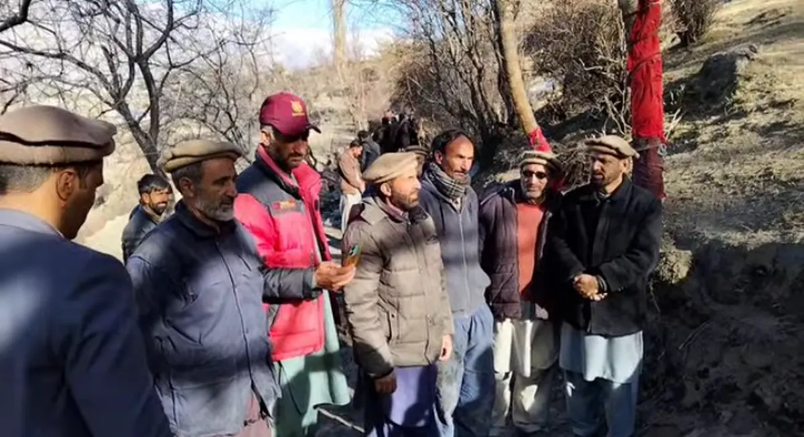

Tallu Broq–Milyar Link Road Restored — A Shining Example of Public Unity
تلو بروق سے ملیار تک رابطہ سڑک کی بحالی — عوامی اتحاد کی بہترین مثال!
23 November 2026 · Tallu Broq Ki Awaaz

تلو بروق سپریم کونسل کی زیرِ سرپرستی اہلِ علاقہ نے اپنی مدد آپ کے تحت تلو بروق تا ملیار لنک روڈ کو منسلک کرکے دونوں گاؤں کے درمیان زمینی رابطہ بحال کرنے کے لیے قابلِ تحسین اقدام کیا ہے۔
عوامی تعاون کا شکریہ
اس اجتماعی کوشش میں تعاون اور بھرپور کردار ادا کرنے پر مجلس وحدت مسلمین (MWM) اور بالخصوص مشتاق حکیمی صاحب کے تہہ دل سے شکر گزار ہیں۔
حکامِ بالا سے اپیل — پل کی تعمیر
حکامِ بالا سے پُرزور اپیل ہے کہ دونوں گاؤں کے درمیان مستقل اور محفوظ آمدورفت کو یقینی بنانے کے لیے اس مقام پر پل کی تعمیر کے لیے خصوصی گرانٹ فراہم کی جائے۔ عوام اپنی مدد آپ کے تحت سڑک کا رابطہ قائم کر چکے ہیں، اب حکومتی تعاون سے پل کی تعمیر وقت کی اہم ضرورت ہے۔
یہ اقدام اس بات کا ثبوت ہے کہ جب عوام متحد ہو کر اپنی مدد آپ کے تحت میدان میں اترتے ہیں تو مشکل سے مشکل کام بھی ممکن ہو جاتا ہے۔ اتحاد، تعاون اور خدمتِ خلق ہی ترقی کا راستہ ہے۔
اہلِ علاقہ کو مبارکباد! ❤️
In English
Under the patronage of the Tallu Broq Supreme Council, the people of the area have taken a praiseworthy step: working on a self-help basis, they have reconnected the Tallu Broq–Milyar link road and restored land contact between the two villages.
Thanks for the public cooperation
We are deeply grateful to Majlis Wahdat-e-Muslimeen (MWM), and especially to Mushtaq Hakimi Sahib, for their cooperation and wholehearted role in this collective effort.
Appeal to the authorities — build the bridge
We strongly appeal to the higher authorities to provide a special grant for the construction of a bridge at this point, so that permanent and safe travel between the two villages can be ensured. The public has already restored the road connection through its own efforts; now, with government cooperation, building the bridge is the need of the hour.
This step is proof that when people unite and take the field on a self-help basis, even the hardest task becomes possible. Unity, cooperation and service to humanity — that is the path of progress.
Congratulations to the people of the area! ❤️